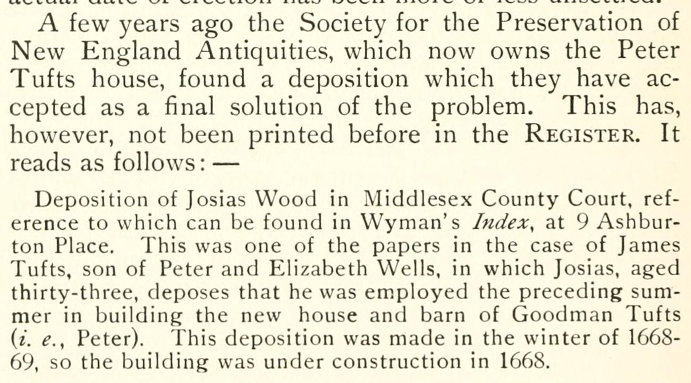
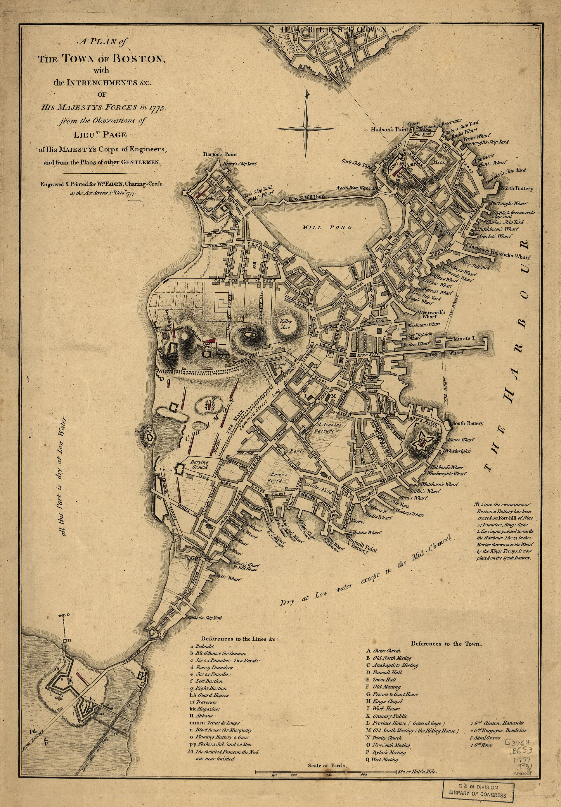
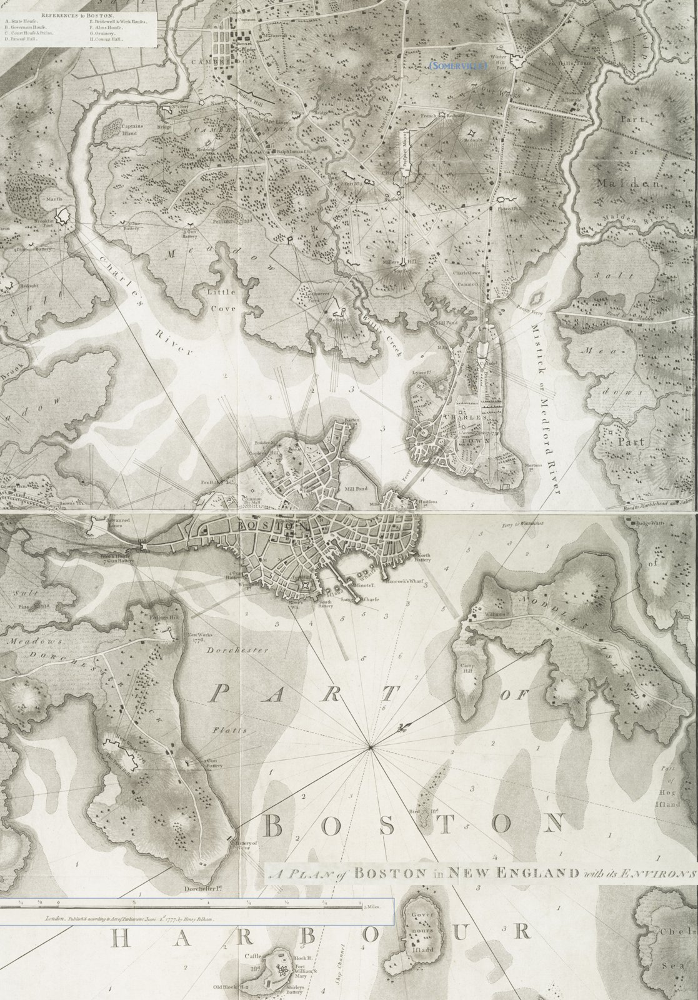
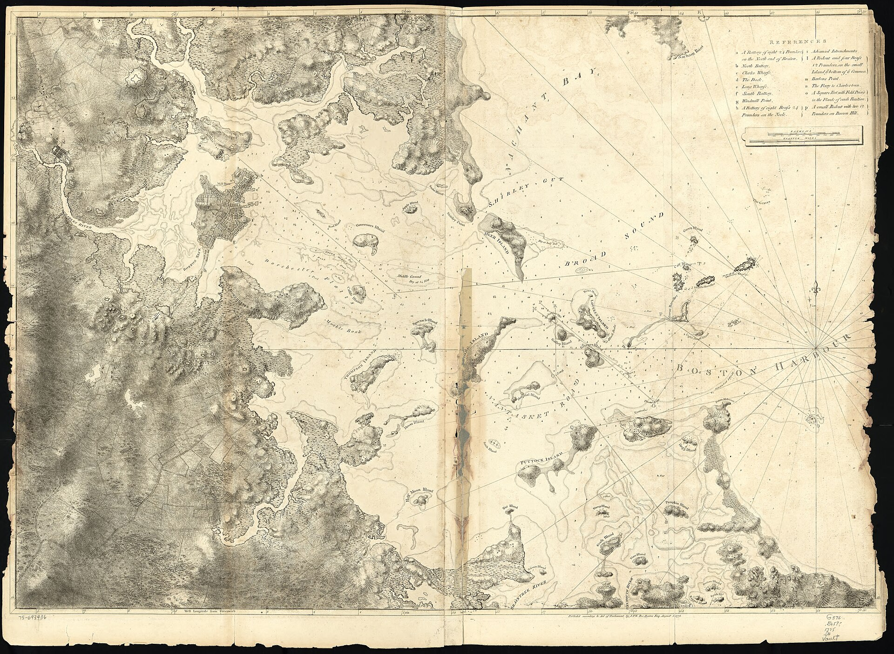
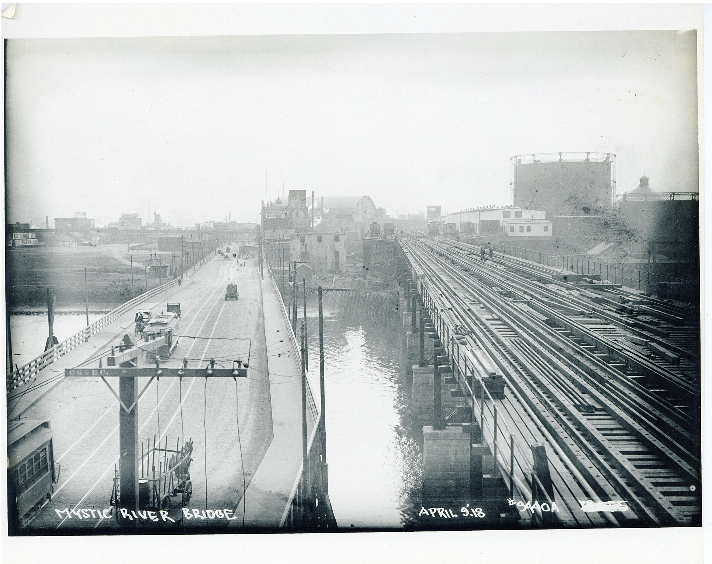
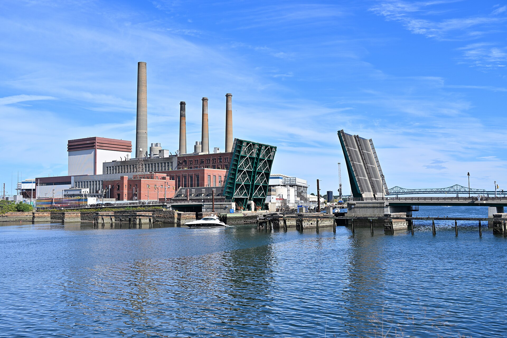
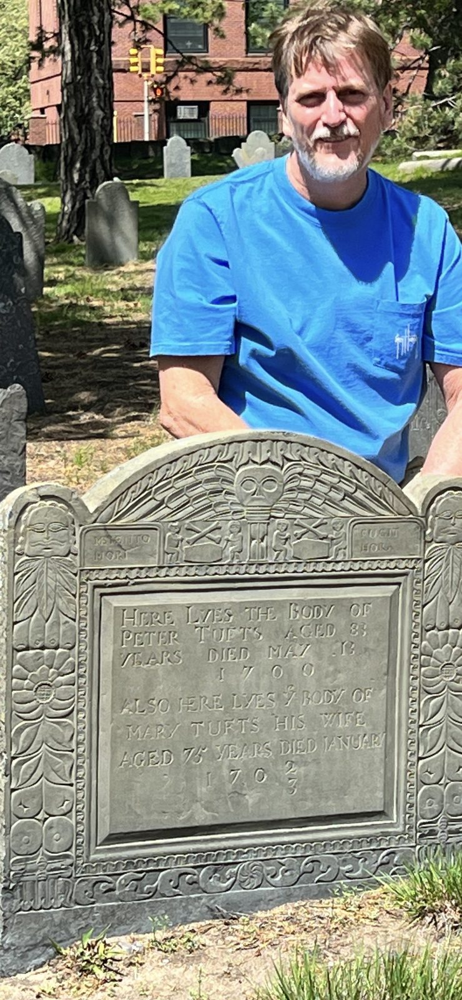

Biography
Peter Tufts came to Charlestown from England and settled across the Mystic on the Malden side, the “Mystic Side” of Charlestown. All the Tufts families of Malden, Medford and Charlestown on this site descend from him.
“This was the beginning of the Penny Ferry which served the inhabitants of Malden and the upper towns until 1787, when it was superseded by the Malden Bridge.”
Deloraine Pendre Corey, The History of Malden, Massachusetts, 1633–1785 (1899), p. 85, on Charlestown’s vote of April 2, 1640 that Philip Drinker keep “a ferry at the Neck of Land with a sufficient boat”. Page scan (Internet Archive) The town is Malden throughout.
“Drinker, who died June 23, 1647, was succeeded a few months before his death by Peter Tufts, who afterwards became a large landholder on Mystic Side and in Malden, and the owner of the Nowell grant. He was assisted by his brother-in-law, William Bridge.”
Deloraine Pendre Corey, The History of Malden, Massachusetts, 1633–1785 (1899), p. 85, note 53, citing Frothingham, History of Charlestown, p. 147. Page scan (Internet Archive)
“He kept the Ferry between Charlestown and Malden with his brother-in-law, Bridges, in 1646-7”
Edward C. Booth, “The Tufts Family in Somerville,” Historic Leaves (Somerville Historical Society), vol. 1 (1902–03), part 1, p. 21. Perseus
“these two continued to be the only bridges until the Malden bridge was built at the Penny-ferry in Charlestown .”
“Why Mystic?”, Medford Historical Register, vol. XXI (1918), p. 54. Text (Perseus) The town is Malden throughout.
Corey says the ferry-ways were built on “the southerly side” of an island in the marsh “afterward known as the Ferry Island” (p. 85, note 53). The ferry did not stay with Tufts: in 1651 the town voted to let it to John Harris, and soon after it was granted to Philip Knight (same note).
He became one of the great landholders north of the Mystic. In 1663 he bought the two-hundred-acre Nowell grant from Parnell Nowell, executrix:
“The two hundred acres were sold to Peter Tufts in 1663 by Parnell Nowell, as executrix, and with large additions, gained by purchase from the Cradock farm, remained in the family of the purchaser many years.”
Deloraine Pendre Corey, The History of Malden, Massachusetts, 1633–1785 (1899), p. 58. Page scan (Internet Archive)
“Peter, of Medford, who lived upon a portion of the three hundred and fifty acres of the original Cradock farm, which his father had bought of Richard Russell's estate in 1677.”
Deloraine Pendre Corey, The History of Malden, Massachusetts, 1633–1785 (1899), p. 215, note, on his son Capt. Peter Tufts. Page scan (Internet Archive)
The brick house on his Mystic Side land, now the Peter Tufts House at 350 Riverside Avenue, Medford, has been dated by a court deposition. In the winter of 1668–69, in a Middlesex County Court case of his son James, Josias Wood, aged thirty-three, deposed that he had worked the previous summer “in building the new house and barn of Goodman Tufts.” The house’s owner, the Society for the Preservation of New England Antiquities (now Historic New England), accepted this as dating the house to 1668. (Ruth D. Coolidge, “The Date of the Peter Tufts House,” Medford Historical Register, vol. XLI, no. 2 (June 1938), pp. 30–31. Page image (Internet Archive)) See Places: Peter Tufts House.

A few years ago the Society for the Preservation of New England Antiquities, which now owns the Peter Tufts house, found a deposition which they have accepted as a final solution of the problem. This has, however, not been printed before in the Register. It reads as follows : — Deposition of Josias Wood in Middlesex County Court, reference to which can be found in Wyman’s Index, at 9 Ashburton Place. This was one of the papers in the case of James Tufts, son of Peter and Elizabeth Wells, in which Josias, aged thirty-three, deposes that he was employed the preceding summer in building the new house and barn of Goodman Tufts (i. e., Peter). This deposition was made in the winter of 1668-69, so the building was under construction in 1668.
Transcription of the clipping above: “The Date of the Peter Tufts House,” The Medford Historical Register, vol. XLI, no. 2 (June 1938), p. 30. View the page scan
⚑ Unverified
Whether the 1668 deposition refers to the surviving brick house. Coolidge calls it “barely possible” that it describes another building; the 1915 Register dated the house about 1680. The original court paper has not been seen here.
“Peter Tufts of Mystic Side, who many times during a long life appears in the court records and files, and not always as a desirable neighbor, also complained of them.”
Deloraine Pendre Corey, The History of Malden, Massachusetts, 1633–1785 (1899), p. 330, on the 1692 witchcraft complaints against Elizabeth Fosdick and Elizabeth Paine. Page scan (Internet Archive)
He died at Malden on May 13, 1700, and is buried in Bell Rock Cemetery. His stone reads “Here Lyes the Body of Peter Tufts aged 83 years died May 13 1700” (Find a Grave memorial 20180511). See also Colonial and the ferry on Businesses.
The Ferry Crossing: Maps and Views
“He kept the Ferry between Charlestown and Malden with his brother-in-law, Bridges, in 1646-7”
Edward C. Booth, “The Tufts Family in Somerville,” Historic Leaves (Somerville Historical Society), vol. 1 (1902–03), part 1, p. 21, on Peter Tufts the immigrant. Perseus
The crossing from Charlestown Neck to Malden ran across the mouth of the Mystic. The 17th- and 18th-century charts and plans below show this ground. Peter Tufts Jr.’s own 1794 Medford and 1818 Charlestown plans are in Maps. Today the crossing is roughly where Alford Street Bridge runs (OpenStreetMap, © OpenStreetMap contributors, ODbL).
⚑ Unverified
That the ferry Peter Tufts kept in 1646–47 was the later “Penny Ferry,” replaced by Malden Bridge (1787) on the line of today’s Alford Street Bridge, is the usual account, but no source quoted on this site says so yet. None of the three period maps has been checked for a labelled ferry. “Tufts Landing” was not found in any source checked.





.png){kind=link}









A Household in Court, 1660, and the Ell Pond Farm, 1663
The Middlesex court records preserve a glimpse of the immigrant’s household. In 1660 James Barrett and William Luddington sued Mary Tufts, Peter’s wife, for slander. The quarrel began, Goss explains, when Peter’s servant came to them with a complaint:
“It appears by the evidence, that Peter Tufts of Malden, had beaten and abused his man Henry Swillaway, who went to Barrett and Luddington and told his tale and cried.”
Elbridge Henry Goss, The History of Melrose, County of Middlesex, Massachusetts (1902), p. 100. Internet Archive (Transcribed from the printed page.)
When the two men gave evidence for Swillaway, Mary said that none spoke against her husband at court “but the Skines of the Country, and liars, and them that did not care what they said.” The jury found for the plaintiffs, with damages, and ordered her to make a public acknowledgment before the Malden congregation on a Sunday afternoon, beginning: “That whereas I Mary Tufts am legally convicted of slandering & wronging James Barrat & William Luddington” (Goss, citing Middlesex Court Records, vol. i, p. 200; Elbridge Henry Goss, The History of Melrose, County of Middlesex, Massachusetts (1902), p. 100. Internet Archive).
Three years later he parted with land at the heart of what became Melrose:
“Peter Tufts, who seems to have been a land speculator, owning large tracts of land in this region, sold, in 1663, to Samuel Howard, then of Charlestown, his farm land, which was situated in what is now the centre of Melrose.”
Elbridge Henry Goss, The History of Melrose, County of Middlesex, Massachusetts (1902), p. 118. Internet Archive, citing Middlesex Deeds, book 3, p. 276 (the farm lay at Ell Pond)
His Daughter Mary Edes
The Records of Littleton (1900) note under the Edes family: “John Edes m. Mary, b. 1658, dau. Peter Tufts” (Records of Littleton, Massachusetts (1900), p. 458. Internet Archive). This agrees with “Mary Eades,” one of the daughters named in the immigrant’s will.
His Gravestone at Bell Rock

Peter and his wife Mary share one carved slate in Bell Rock Cemetery, Malden. Its inscription reads: “Here lyes the body of Peter Tufts aged 83 years died May 13 1700. Also here lyes ye body of Mary Tufts his wife aged 75 years died January 1702/3.”
Service Record
Town: Charlestown (Mystic Side) and Malden, Mass. · Dates: c. 1617–1700
Ferryman at Charlestown Neck from early 1647 (Corey, p. 85, n. 53). Freeman 1665 (Jones, p. 128). Constable and other town service appear in Corey; not yet itemised here.
Family Connection
Married Mary Pierce (see Spouse). Children named by Brooks (1855, Register of Families) include Capt. Peter Tufts of Medford, Jonathan Tufts of Medford and John Tufts of Malden. Capt. Peter was father of Dr. Simon Tufts (1700–1747) (Brooks, p. 545). A further son, James, was killed at Bloody Brook in 1675 (NEHGR 51, p. 301).
Relatives with profiles on this site: grandson Dr. Simon Tufts (1700–1747), through Capt. Peter; great-grandson Timothy Tufts, through John of Malden and Peter of Milk Row ; great-great-great-grandson Turell Tufts; son Capt. Peter Tufts; son James Tufts (killed at Bloody Brook); grandson James Tufts (1672–1733); granddaughter Sarah Tufts Hinckley; grandson Peter Tufts (1697–1776), through John of Malden; great-grandson Stephen Tufts Jr. of Malden (1749–1832)
; great-great-great-grandson Turell Tufts; son Capt. Peter Tufts; son James Tufts (killed at Bloody Brook); grandson James Tufts (1672–1733); granddaughter Sarah Tufts Hinckley; grandson Peter Tufts (1697–1776), through John of Malden; great-grandson Stephen Tufts Jr. of Malden (1749–1832) .
.
Spouse(s)
- Mary Pierce (c. 1628–1703), daughter of Thomas Pierce. Married at Charlestown, about October 1647 (WikiTree) or “by 1648” (New England Marriages to 1700, as quoted by WikiTree).
Their joint stone in Bell Rock Cemetery adds: “Also here lyes buried ye body of Mary Tufts his wife aged 75 years died January 1702/3” (Find a Grave 20180511). Jones (p. 128) gives only “His wife’s name was Mary. She died in 1703, aged seventy-five.”
⚑ Unverified
Her surname Pierce and her father Thomas come from WikiTree and the marriage compilations; none of the printed sources quoted here names her family. The marriage date differs between WikiTree’s data (Oct. 1647) and its text (1648).
Authoritative IDs / Index Numbers
| Source | ID / status |
|---|---|
| Perseus person index (auth=) | auth=tufts,peter. This is a name-level key shared by every Peter Tufts in Perseus, not a personal ID. Use it with the passages cited on this page. |
| Find a Grave memorial | 20180511 (dates and family checked) |
| Brooks, History of Medford (1855) register no. | No. 1 (head of the Tufts register), p. 545 |
| Mass. Soldiers and Sailors | Not yet checked for this page |
| DAR ancestor no. | Note: Pending further work. |
| FamilySearch ID | Note: Pending further work. |
| Geni profile | Note: Pending further work. |
| WikiTree ID | Note: Pending further work. |
| Town / vital records | Brooks’s register (above) is drawn from Medford town and church records; printed VR volume and page not yet checked |
Only IDs confirmed against dates and family are given as matches. “Not yet checked” means the source has not been searched; “Checked, not found” means it was searched without a match.
⚑ Unverified
Partner’s name: Corey (citing Frothingham) has “William Bridge”; Booth has “Bridges”; New England Marriages to 1700 (as quoted by WikiTree) has “called bro. by William BRIDGES.” No source seen names a Thomas Bridges, or says he married a sister of Mary Pierce; that claim is not supported. Russell farm: Corey says 350 acres, bought of Richard Russell’s estate in 1677, after Russell’s death in 1676. The “300-acre farm from Russell’s executors” version gives a different acreage. “Tufts Landing” as the name of the ferry landing is not found in Corey, Booth, Brooks, the Register or WikiTree. Wilby, Norfolk; in Charlestown 1637 “on the Malden side”; 43 acres by 1638; on Mystic Side by 1647 as one of the earliest and largest landowners: these appear only in WikiTree’s text copied from Wikipedia. WikiTree itself marks the Wilby/Tibenham birthplace “[uncertain].” Corey confirms only that he became “a large landholder on Mystic Side and in Malden.” Birth year c. 1617 is computed from “aged 83” on his stone. Penny Ferry is Corey’s name for the ferry from 1640 onward, not a name recorded in 1647. No BillionGraves memorial page was found for him; only the Bell Rock Cemetery listing.
From Cutter’s Memoirs (1910)
“Peter Tufts, the immigrant ancestor, was born in England, in 1616, probably in the southern part of county Norfolk”
Cutter, Genealogical and Personal Memoirs, vol. II, p. 1198. Page (Internet Archive)
“was the ferryman with his brother-in-law. He resided on the Malden side of the river, where the city of Everett is now located”
Cutter, Genealogical and Personal Memoirs, vol. II, p. 1198. Page (Internet Archive)
Cutter adds that he was admitted a freeman May 3, 1665, and that his will, dated March 1, 1693, with a codicil of July 8, 1695, was proved June 10, 1700. It names his wife Mary, sons Peter, Jonathan and John, daughters Mary Eades, Elizabeth Lynde, Mercy Waite and Sarah Oakes, and his grandson James. Cutter gives his death as May 13, 1700, “aged eighty-three,” and his wife as “Mary Pierce, who died January 10, 1702-3, aged seventy-five, daughter of Thomas and Elizabeth Pierce” (vol. II, p. 1198). This is the first printed source on this page to name Mary’s parents; it is a compiled work and gives no record behind them.
“James, son of Peter Tufts, was born in Charlestown, about 1650. He was a soldier in King Philip’s war, and was killed in the battle of Bloody Brook, September 18, 1675.”
Cutter, Genealogical and Personal Memoirs, vol. II, p. 1198. Page (Internet Archive) (transcribed from the printed page.)
⚑ Unverified
Birth year: Cutter prints 1616; the stone’s “aged 83” at his death in May 1700 gives about 1617. Cutter’s year for the start of his ferry service is unclear in the original; Corey (p. 85, n. 53) has him succeeding Drinker a few months before June 1647.
Profiles: James Tufts (killed at Bloody Brook, 1675); Capt. Peter Tufts (c. 1648–1721); his grandson James Tufts (1672–1733).
Cutter’s Tufts sketch (vol. II, pp. 1198–1200) is a compiled family history of 1910, written for a descendant’s line. Quotes are from the Internet Archive’s copy, checked against the printed page numbers.
Source added: William Richard Cutter, ed., Genealogical and Personal Memoirs Relating to the Families of the State of Massachusetts (New York: Lewis Historical Publishing Co., 1910).
Further Details from Additional Sources
The Malden bicentennial history of 1850 gives a compact early account:
“He kept the “Penny Ferry” where Malden Bridge now stands, in 1646. In 1654 he is registered as a Juryman in the Court Record books of Middlesex county. In 1664, he bought of Mrs. Nowell, executrix of Increase Nowell, two hundred acres of land in Charlestown, at a place called Mystic-fields.”
The Bi-centennial Book of Malden (1850), p. 249. Book scan (Internet Archive) (Transcribed from the printed page.)
“Peter Tufts, Sen., was Tythingman or Overseer, to look after the morals of the district of Malden. The will of Mr. T. is dated March 1, 1693, at which time he was 74 years of age. He died May 13, 1700, aged 83, and lies buried in the old Malden burying-ground. His grave-stones, made probably in England, are still in good preservation.”
The Bi-centennial Book of Malden (1850), p. 250. Book scan (Internet Archive) (Transcribed from the printed page.)
He was among the Malden men who signed, “in the name of the rest,” the town’s 1662 petition to the General Court for a grant of land at Pennacook (Mass. Archives, vol. 112, p. 147, printed in the same book, p. 59). The book also suggests that Malden “might have received its present name from him,” which is speculation.
⚑ Unverified
The Malden book’s claims that he came “between 1638 and 1640” from Malden in England, and that the town was named for him, are inferences without a cited record. It gives his wife’s birth as 1628 and death as 1703, aged 75.
Links and Resources
Every source, record, map, survey, marker and artifact tied to this person, gathered in one place. Page numbers are given where a book is cited.
Maps, Surveys and Artifacts
- Maps — The crossing from Charlestown Neck to Malden ran across the mouth of the Mystic. The 17th- and 18th-century charts and plans below show this ground. Peter Tufts Jr.’s own 1794 Medford and 1818 Charlestown plans are
- — A Plan of the Town of Boston … in 1775 (Lieut. Page, publ. Faden 1777). Thomas Hyde Page’s survey of Boston and the Charlestown peninsula. Charlestown Neck and the mouth of the Mystic, where the ferry
- Source: Wikimedia Commons — …survey of Boston and the Charlestown peninsula. Charlestown Neck and the mouth of the Mystic, where the ferry to Malden ran, are at the top.Image: Thomas Hyde Page; William Faden (Library of Congress gm71000620). Public domain.
- — …Charlestown peninsula. Charlestown Neck and the mouth of the Mystic, where the ferry to Malden ran, are at the top.Image: Thomas Hyde Page; William Faden (Library of Congress gm71000620). Public domain. Source: Wikimedia Commons
- Source: Wikimedia Commons — …and Chelsea,” usually credited to Henry Pelham. It shows Winter Hill, Charlestown Neck and the Mystic shore toward Malden.Image: Map from NYPL (Hades-118256-54202); crop by Fabartus. CC BY 3.0 (crop); original map public domain.
- — …to Henry Pelham. It shows Winter Hill, Charlestown Neck and the Mystic shore toward Malden.Image: Map from NYPL (Hades-118256-54202); crop by Fabartus. CC BY 3.0 (crop); original map public domain. Source: Wikimedia Commons
- Source: Wikimedia Commons — …J. F. W. Des Barres’s chart for The Atlantic Neptune, with soundings in feet. The Mystic River mouth between Charlestown and Malden is at upper left.Image: Joseph F. W. Des Barres (Library of Congress 75693436). Public domain.
- — …for The Atlantic Neptune, with soundings in feet. The Mystic River mouth between Charlestown and Malden is at upper left.Image: Joseph F. W. Des Barres (Library of Congress 75693436). Public domain. Source: Wikimedia Commons
- Source: Wikimedia Commons — …1918. Looking toward Sullivan Square on 9 April 1918. Alford Street Bridge carries the road from Charlestown across the Mystic toward Everett and Malden.Image: Boston Elevated Railway (City of Boston Archives). Public domain.
- — …Square on 9 April 1918. Alford Street Bridge carries the road from Charlestown across the Mystic toward Everett and Malden.Image: Boston Elevated Railway (City of Boston Archives). Public domain. Source: Wikimedia Commons
- Source: Wikimedia Commons — Alford Street Bridge, raised (2024). The bascule span raised for a boat on the Mystic River, 28 September 2024; the retired Mystic Generating Station (Everett) is behind.Image: 4300streetcar. CC BY 4.0.
- — Gravestone of Peter and Mary Tufts, Bell Rock Cemetery, Malden. The carved slate of Peter Tufts the immigrant and his wife Mary, Bell Rock Cemetery, Malden, with Shannon Tufts. Inscription: “Here lyes

Graves and Memorials
- He died at Malden on May 13, 1700, and is buried in Bell Rock Cemetery. His stone reads “Here Lyes the Body of Peter Tufts aged 83 years died May 13 1700” (Find a Grave memorial · 20180511
Markers, Plaques and Places
- Places: Peter Tufts House — …(now Historic New England), accepted this as dating the house to 1668. (Ruth D. Coolidge, “The Date of the Peter Tufts House,” Medford Historical Register, vol. XLI, no. 2 (June 1938), pp. 30–31. Page image (Internet Archive))
- the ferry on Businesses — He died at Malden on May 13, 1700, and is buried in Bell Rock Cemetery. His stone reads “Here Lyes the Body of Peter Tufts aged 83 years died May 13 1700” (Find a Grave memorial 20180511). See also Colonial an
Digitized Books and Journals
- Page scan (Internet Archive) — Deloraine Pendre Corey, The History of Malden, Massachusetts, 1633–1785 (1899), p. 85, on Charlestown’s vote of April 2, 1640 that Philip Drinker keep “a ferry at the Neck of Land with a sufficient boat”.
- Edward C. Booth, “The Tufts Family in Somerville,” Historic Leaves (Somerville Historical Society), vol. 1 (1902–03), part 1, p. 21. · Perseus
- “Why Mystic?”, Medford Historical Register, vol. XXI (1918), p. 54. · Text (Perseus)
- Page scan (Internet Archive) — Deloraine Pendre Corey, The History of Malden, Massachusetts, 1633–1785 (1899), p. 58.
- Page scan (Internet Archive) — Deloraine Pendre Corey, The History of Malden, Massachusetts, 1633–1785 (1899), p. 215, note, on his son Capt. Peter Tufts.
- Page image (Internet Archive) — …of New England Antiquities (now Historic New England), accepted this as dating the house to 1668. (Ruth D. Coolidge, “The Date of the Peter Tufts House,” Medford Historical Register, vol. XLI, no. 2 (June 1938), pp. 30–31.
- Page scan (Internet Archive) — Deloraine Pendre Corey, The History of Malden, Massachusetts, 1633–1785 (1899), p. 330, on the 1692 witchcraft complaints against Elizabeth Fosdick and Elizabeth Paine.
- Elbridge Henry Goss, The History of Melrose, County of Middlesex, Massachusetts (1902), p. 100. · Internet Archive
- The Records of Littleton (1900) note under the Edes family: “John Edes m. Mary, b. 1658, dau. Peter Tufts” (Records of Littleton, Massachusetts (1900), p. 458. · Internet Archive
- Cutter, Genealogical and Personal Memoirs, vol. II, p. 1198. · Page (Internet Archive)
- The Bi-centennial Book of Malden (1850), p. 249. · Book scan (Internet Archive)
Related Pages on This Site
- Colonial — He died at Malden on May 13, 1700, and is buried in Bell Rock Cemetery. His stone reads “Here Lyes the Body of Peter Tufts aged 83 years died May 13 1700” (Find a Grave memorial 20180511). See als
Other Resources
- OpenStreetMap — …the mouth of the Mystic. The 17th- and 18th-century charts and plans below show this ground. Peter Tufts Jr.’s own 1794 Medford and 1818 Charlestown plans are in Maps. Today the crossing is roughly where Alford Street Bridge runs